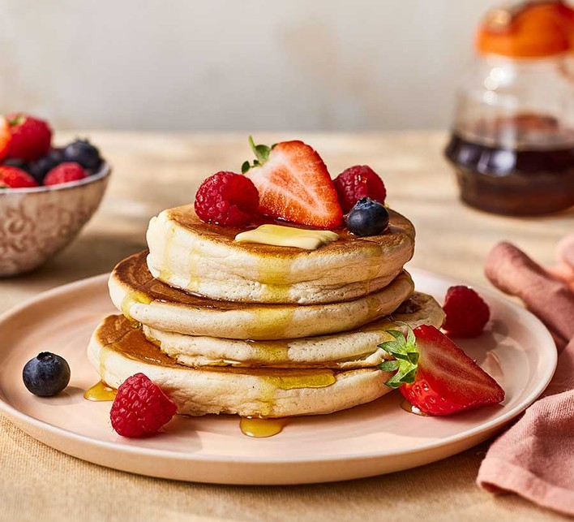
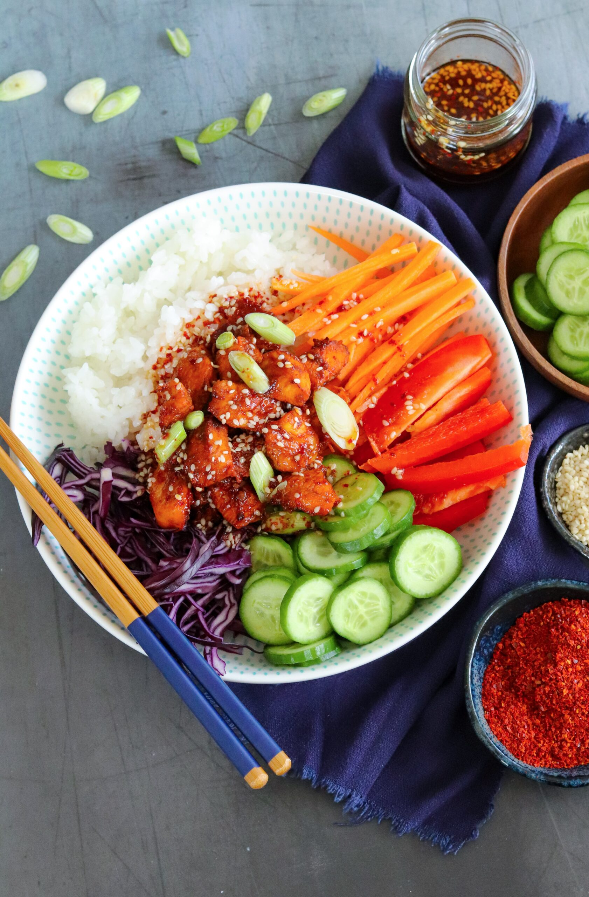
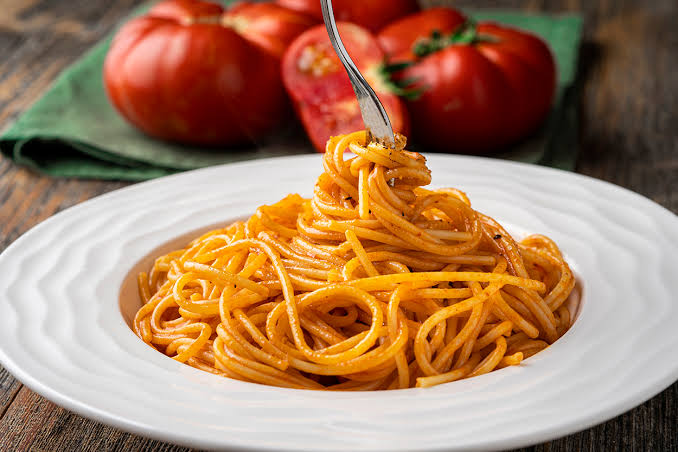

1) Pancakes
Quick sweet breakfast

Soft pancakes that are easy to make in 15 minutes.
Ingredients
- 1 cup flour
- 1 egg
- 1 cup milk
- 1 tbsp sugar
- 1 tsp baking powder
- Pinch of salt
Steps
- Mix flour, sugar, baking powder, and salt.
- Add egg and milk, mix until smooth.
- Heat a pan and pour small portions.
- Cook 1–2 minutes each side.
- Serve with honey or fruits.
2) Chicken Rice Bowl
Simple and healthy lunch

A balanced meal with protein, carbs, and vegetables.
Ingredients
- 150g chicken breast
- 1 cup cooked rice
- 1/2 cucumber
- 1 tomato
- Salt, pepper
- Soy sauce (optional)
Steps
- Cut chicken and season with salt and pepper.
- Cook chicken in a pan until ready.
- Chop vegetables.
- Put rice in a bowl, add chicken and vegetables.
- Add soy sauce if you want.
3) Spaghetti Aglio e Olio
Fast pasta with garlic

Classic Italian pasta: simple ingredients, great taste.
Ingredients
- 200g spaghetti
- 3 cloves garlic
- 3 tbsp olive oil
- Chili flakes (optional)
- Salt
- Parsley
Steps
- Boil spaghetti in salted water.
- Slice garlic, heat it in olive oil (do not burn).
- Add chili flakes if you like spicy food.
- Add cooked spaghetti to the pan and mix.
- Top with parsley and serve.